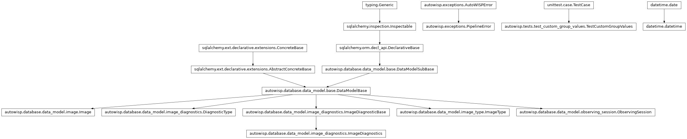
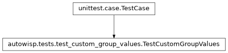

autowisp.tests.test_custom_group_values module
Class Inheritance Diagram

Tests for evaluating quantities over a photref group’s members.
A photref group is given as its members, (image, channel) pairs that may
span sessions, and each member is one point, with a quantity’s slot bound to
that member’s own channel.
The fixture is one group over two nights, mixing what has to be told apart:
an image that is a member in both G0 and G1; one that is a member only
in G1 but has a G0 value too, which must not be read; a non-member on
the first night, whose outlying values would shift any aggregate they leaked
into; a member on the second night; and a member with nothing recorded in its
channel.
- class autowisp.tests.test_custom_group_values.TestCustomGroupValues(methodName='runTest')[source]
Bases:
TestCase
Quantities over an explicit list of members, one point each.
- _evaluate(quantities, expressions=None, members=None)[source]
Return
get_custom_group_values()over the group, in a session.Members are handed over in reverse, so that the order they come back in is the function’s doing.
- classmethod _fill_database()[source]
Two nights of object frames, holding the group and one other.
Provenance foreign keys are left dangling, as SQLite does not enforce them and nothing here reads them.
- classmethod setUpClass()[source]
Hook method for setting up class fixture before running tests in the class.
- classmethod tearDownClass()[source]
Hook method for deconstructing the class fixture after running all tests in the class.
- test_a_quoted_channel_is_read_for_every_member()[source]
Whatever the member’s own channel, including for image 0 twice.
- test_an_aggregate_spans_the_whole_group()[source]
Both nights and both channels, and nothing outside the group.
The median of the members’ 1, 2, 4 and 8 is 3; image 2’s 100 and 200 would move it, and so would image 1’s G0 value.